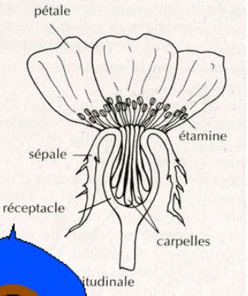
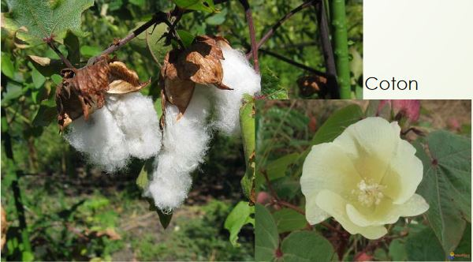
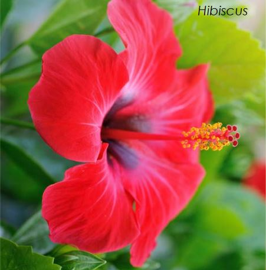
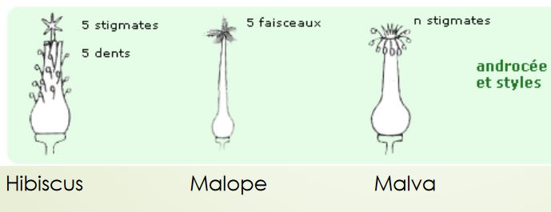
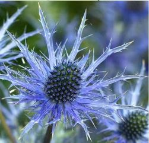

Les Angiospermes
La Taxonomie
Embranchements (phyte) > Classes (opsides) > Ordres (ales) > Familles (acées) > Genre ( 1ere lettre en majuscule, nom en latin) > Espèces ( 1ere lettre en minuscule, nom en latin)
ex Bellis perennis L. Helichrysumn italicum
LILIACEES
I) Généralité liliacées
Elles sont de l'ordre des liliales comptant 3000 espèces (tulipes, muguet, l'ail, jacynthe de bois...). Elles sont monocotylédones (nervures //, 3 verticilles floraux). Ce sont des plantes vivaces(durent plusieurs années). Elles sont souvent précoces.
Les tulipes venaient de Cocase et ont été importés en Hollande, elle est à l'origine de la tulipomanie -> conservation des tulipes pour arriver à une très grande variété. Elles avaient de beaucoup de valeur au XVII e siècle (un bulbe pour 87000 euros)
II) Appareil végétatif
L'appareil végétatif est extrêmement variable (diversité des tiges) et souvent enterré comme les bulbes (tulipe oignon, ail) ou les rhizomes (muguet). Les tiges en forme de feuilles s'appellent des cladodes pour le Ruscus aculeatus

Les inflorescences (position des fleurs) très différentes pouvant appartenir à plusieurs types: épi (fleurs sur l'axe) grappe (pénoncule qui porte les fleurs) ombelle(axe qui se divise en rayon ex ail) fleur solitaire

Chez les liliacées, les fleurs sont hermaphrodites (étamines organe mâle + pistil organe femelle) actimorphes et possèdent des tépales (sépales + pétales)
3T + 3T + (3+3) E + (3C)
Le fruit est un ovaire c'est une capsule ou une baie. Les fleurs sont très voyantes, la pollinisation est entomophile (favorisé par les insectes)
Ovaire supère: ovaire entouré de pièce floral
Ovaire infère: ovaire sous les pièces florales
III) Autre familles proches
Amaryllidacées: liliacées à ovaires infères (ex jonquilles, narcisses)
Iridacées: amaryllidacées avec perte d'une verticille d'étamines
POACEES
I) Généralités
Ce sont des monocotylédones, plus de 12000 espèce, 5e la plus diversifiée (les 1er sont les orchidacées 26000 espèces, 2e les astéracées 23000 espèces, 3e les fabacées 19000 espèces, 4e rubiacées 13000 espèces).
C'est la famille avec la plus grande biomasse produite sur la planète, donc on a une importance écologique, en effet ce sont des espèces ubiquiste (tous les milieux) et une importance économique (agriculture). C'est une famille très évoluée avec spécialisation de tous les organes.
En Afrique du Sud, nous avons la plus grande diversité de Poacées. Elles sont apparues au Crétacé en Afrique ou Amérique du Sud. C'est difficile des les différencier entre elles.
II) Appareil végétatif
Ce sont pratiquement toujours des plantes herbacées (sauf le bambou) annuelles ou vivaces. La tige est creuse et cylindrique, chaume. Les feuilles ont une gaine fendue avec un ligule (partie à la base de la feuille qui indique la famille).
III) Appareil reproducteur
L'epillet est une inflorescence élémentaire des poacées, 1 épillet = 2 fleurs mâle et femelle

Un épillet peut être sessile: épi
Un épillet pédicellé: grappe, cyme, panicule
Adaptation à l'anémogamie
- stigmates plumeux
- anthères oscillantes
- pièces périanthe peu visible
Fleurs chez les espèces primitives :
(3+3)T + (3+3)E + (3C)
0S + OP + 1-3 + 1C
Le fruit est un caryopse est soudée à l'akène + Albumen
CYPERACEES
Ils sont voisins des poacées. Se developpe dans les zones humides. On a une convergence avec les poacées mais pas de filiation directe. C'est une plante graminoïde, les feuilles sont à insertion tristiques (3 directions différentes), la tige est à section triangulaire, ne possède pas de noeud. Les feuilles sont à gaines non fendues et ne possèdent pas de ligules (mais parfois antiligules). Les feuilles sont en "V"
Inflorescence: grappe contractée d'épillets : épi
Les fleurs sont réduites. Le périanthe est réduit à des soies ou écailles. La pollinisation anémophile (pollen entraîné par le vent). Le fruit est l'akène (fruit sec indéhiscent à graine unique dont le péricarpe n'est pas soudé à la graine ex pissenlit).
Chez le carex, l'évolution de l'épillet est en fleurs unisexuées. Le périanthe est une utricule. Il y a beaucoup d'inflorescences variables. Il est monostachiée.
Hétérostachiée : plusieurs épis que mâle ou que femelle
Homostachiée : plusieurs épis mâle et femelle
JONCACEES
Une famille de 7 genres et 400 espèces.
L'appareil végétatif est herbacée, on a des rhizomes, les feuilles sont basales, alternes à limbe graminiforme ou cylindrique.
La fleur a des tépales, l'inflorescence est souvent en cymes ou en glomérules, les fleurs hermaphrodites et actinomorphes, en général vertes ou brunes
3+ 3T + 3 + 3 E + (3C)
PAPAVERAEES
I)Généralités
Ce sont des plantes dicotylédones, elle est universellement reconnue par les taxonomistes. C'est une famille cosmopolite (qu'on peut retrouver partout), répendue sur les climats tempérés et subtropicaux.
La plupart des plantes sont herbacées, quelques unes sont des arbustres ou des arbrisseaux.
La fleur a un ovaire supère et les pétales sont froissées avec floraison On recupère le latex pour faire de la résine et de l'opium.
Les fleurs sont alternes, au moins à la base, ou parfois verticillées. Elles sont pétiolées. Les feuilles sont généralement lobées, composées de plusieurs follioles non entièrement séparées ou très divisées.
Elles ne possèdent pas de stipule.
II) Appareil végétatif et reproducteur

L'inflorescence terminal est une cyme ou une grappe. Elle sont inodores et actimorphes. Elles présentent un calice à deux sépales et de nombreuses étamines (de 16 à 60). Elles sont entogames et quelques unes sont anémogames.
Le fruit sec est généralement une capsule qui s'ouvre à maturité pour liberer les graines des pores.
RENONCULACEES
I) Généralités
L'étymologie rana signifie grenouille car ce sont des plantes qui sont souvent dans les milieux humides et même des milieux aquatiques.
Elle sont de l'ordre des ranunculles et c'est un groupe monophyletique (groupe frère de tous les autres eudicotylédones basales). C'est une famille par enchaînement (à l'intérieur de cette famille on va voir les espèces à structure très primitives ou d'autres espèces à caractères très évolués. Elles vivent dans les régions tempérées ou froides et sont souvent vivaces (bulbe ou rizhome) et souvent précoce.
II) Appareil végétatif
Ce sont pratiquement que des herbacées (sauf clématites). Le limbe est souvent très découpé et les feuilles s'insèrent sur une gaine élargie. Les espèces étant en milieu aquatique sont en adaptation avec les feuilles
III) Appareil reproducteur
C'est une famille par enchainement. Les fleurs les plus primitives peuvent être des anémones. Elles ont un receptacle bombé et vont s'inserer en spirale. On a aussi souvent un grand nombre de pièce floral.
Elle va changer ses caractères avec la cyclisation (une partie de la feuille devient un cycle). On va stabiliser le nombre de pièce floral, un nombre de sépale qui se stabilisera autour de 5. Les anémones varient entre 5 et 10 pétales.
Ensuite il y aura soit la sépalisation, bractées qui vont former un calice ou la pétalisation, les étamines vont se tranformer en pétales appelés nectaires qui produise le nectar pour attirer les pollinisateurs. Les étamines sont très nombreuses.
On a des sites avec 5 pièces pentamérisation, elle a du mal à se faire sur les étamines et les carpelles.
Il y a une zygomorphisation, symétrie qui est souvent un critère d'évolution.
(3-n)S + (0-n)P + 5- infini)E + (1-infini)C
Les fruits sont
- akènes et ne possèdent qu'une seule graine (comme la clématite).
- follicules qui sont déhiscent et va donner plusieurs graines
- baies
FABACEES
I) Généralités
fabale veut dire fève. Avant on les appelait les légumineuses ou papillonacées lié aux fleurs qui évoquaient un papillon
C'est un groupe de 13000 espèces qu'on retrouve sous forme herbacées en milieu tempérée
Elles sont surtout de formes arbusives en pays chaud.
Elles ont une importance économique (alimentaire mais aussi bois et rôle ornementale). C'est la deuxième famille derrière les poacées qui a cette importance. Elles sont riche en protéïnes et contiennent des matières grasses interressantes.

II) Appareil végétatif
Les racines sont en symbiose avec des bactéries qui vont enrichir le sol en azote.
Les feuilles sont :
- primitives : composés imparipennées(un nombre impair de folioles) et stipulées
- évolués : simple ou composée pennée



III) Appareil reproducteur
L'inflorescence est en grappe et les fleurs sont zygomorphe, dialypétales, avec 5 pétales
(5)Sépales + 5Pétales + (9)+1Etamines +(1)Carpelle
Le fruit est une gousse avec des graines arquées. Les gousses de cacahuète se retrouve sous terre.
BETULACEES
Ce sont des plantes dicotylédones qui sont des arbres (comme le bouleau) ou des arbustres qui vivent dans les endroits froids et humides.
Les fleurs de cette famille sont caractéristiques. Ce sont des chatons unisexués. L'inflorescence est donc souple, généralement pendante.
Le bouleau a un fruit qui est un épi de cyme.
FAGACEES
Ce sont des plantes dicotylédones, généralement des arbres (chêne, hêtre, chataigner..)
Ces plantes ont un feuillage caduc ou persistant. Les feuilles à nervation pennée sont généralement simples alternes.
Les racines sont en symbiose avec des champignons, ectomycorhizes.
Leur inflorescence est variée (épi, chaton...). Généralement les fleurs sont en cymes bipares complètes ou réduites.
(3+3)S + (36-40)E + (3+3)C
Les fruits sont des nucules (fruit sec de type akène) enveloppées dans des cupules ligneuses à quatre ou sans valves.
ROSACEES
I) Généralités
La famille est cosmopolite (régions tempérées de l'hemisphère nord) Il y a une grande diversité des formes, c'est une famille par enchaînement et à une grande importance économique alimentaire (mûre, framboise, fraise, cerises..) et ornementale.
II) Appareil végétatif
Elles ont parfois des
- stolons
- aiguillons crochus et piquants
- rameaux tranformés en épine
Les feuilles sont alternes, souvent stipulées, simples ou composées, avec des folioles dentées parfois grandes ou petites.
III) Appareil reproducteur
L'inflorescence est une grappe
Les fleurs sont actimorphe, hermaphrodite, entomophile, l'ovaire est infère ou supère. La fleur a un receptacle floral en 2 parties
Le receptacle est gymophore, il porte des carpelles
Les fruits sont très variés (dont akènes, drupes)
5S + 5P + nx5 E + nx5 C
La callicule est une sépale surnuméraire (en surnombre).
EUPHORIBIACEES
Genre Euphoribia, Merculiale mais aussi Hevea (caoutchouc)
F. cosmopolite, mieux représentée en régions tropicales
g. Euphorbia: aire la plus large plus de 10 000 sp.
On les trouve dans les milieux desertiques jusqu'au milieux tempérés
I) Appareil végétatif
L'appareil végétatif est très variable
- arbre (caoutchouc), arbuste, caciformes (convergence)
- herbes vivaces (Mercurialees), voire des herbes flottantes
Tout comme les feuilles qui peuvent être simple, entières, alternes, composées, palmées...
II) Appareil reproducteur et végétatif
Appareil reproducteur : très variable
On a généralement une cyme unipare, multipare, grappe de cymes La fleur est toujours unisexuée mais les fleurs mâles et femelles souvent sur le même pied et dans la même inflorescence(à l'exception des Mercuriales)
Importante évolution des fleurs et inflorescences selon deux voies complémentaires:
-
Réduction des pièces florales :
- Pétales disparaissent (fleurs apétales)
- Étamines moins nombreuses (avortement et concrescence)
- Sépales disparaissent
-
Condensation des influorescences
L'évolution touche surtout les fleurs mâles.
0-3-5-n S + 0 P + 1-n E ou 3 C
Exemple d'inflorescence : cyathe des Euphorbia (élément de base) composé de:
- Fleurs mâles composées elles même d'1 étamine sans calice
- Fleur femelle (1 seule entourée par les fl. mâles) réduite au gynécée
- À la base des fleurs mâles bractées se soudent et forment un involucre = péricyathe ou cyathium pourvu de glandes nectarifères
Il est possible d'avoir des cymes ou des cyathe (inflorescence partielle en forme de coupelle)
Elles possèdent des glandes nectarifère
Le fruit est constitué de 3 carpelles fermés, la capsule est dite tricoque = très constant
Les graines sont riches en huile (Ricin)

VIOLACEES
On y retrouve les violettes et les pensées. Souvent des plantes herbacées, les feuilles sont alternes parfois opposées
Les plantes proviennent essentiellement de milieu tempéré (sauf g.Rinorea en sous bois tropical humide)
I) Appareil végétatif
L'appareil végétatif est très variable. Les plantes herbacées, sont souvent rhizomateuses rarement annuelles.
Il existe seulement quelques arbustes (g. Rinorae).
Les feuilles sont alternes ou basales, parfois opposées (Rinorae).
II) Appareil reproducteur et végétatif
Les fleurs sont en grappe ou panicule ou ce sont des fleurs solitaires. La corolle est zygomorphe, avec un pétale ventral éperonné Elle possède 2 étamines qui ont un appendice nectarifère dans l'éperon.
(5S) + 5P + 5E + (3C)
Il existe parfois 5 carpelles, sur des fleurs primitives : il y a eu une évolution.
BRASSICACEES
I) Appareil végétatif
L'appareil végétatif est très variable Il existe des arbustes mais ce sont majoritairement des herbes (annuelles, bisannuelles ou vivaces) Les feuilles sont alternes, simples, découpées ou pennées Les plantes sont souvent à forte odeur, les feuilles riches en essences sulfurées C'est une famille fournissant des légumes et des condiments
II) Appareil reproducteur
Fleurs regroupées en grappe, la fleur est très caractéristique (4 pétales en croix). Elle possède 6 étamines (4 grandes et 2 plus petites externes)
Le nectaire est intrastaminal (à l'intérieur des étamines)
Le gynécée possède 2 carpelles ouverts, soudés par leurs bords, divisés secondairement en 2 loges (fausse cloison). Les ovules sont répartis de chaque côté.
4S + 4P + 6E + 2C en fait : (2+2)S + (2+2)P + 2+(2+2)E + 2C
Le fruit est un silique (fruit déhiscent par deux valves ou silicule).
Le fruit est aplati parallèlement ou perpendiculairement à la cloison.
Les variations sont très rares chez les Brassicassées.
Au niveau du fruit, il y a réduction à deux loges dont l'une devient stérile (ex Crambe-> obtient un akène); ou devient une silicule ailée indéhiscente appelé samare.
GERAMINACEES
Les plantes sont de milieu tempérée et de montagne tropical
I) Appareil végétatif
Les plantes sont herbacées annuelles ou vivaces, il existe quelques petits arbustes Les feuilles sont découpées à composées, pennées (erodium) ou palmées (geranium).. C'est une plante glandulifère

II) Appareil reproducteur
L'inflorescence est généralement en cyme ombelliforme. Les fleurs sont pentamères actimorphes. Elles ont deux verticilles d'étamines, l'externe est parfois absent, les glandes nectarifères sont extrastaminales. L'ovaire pluriloculaire a un long style et 5 stigmates.
5S + 5P + (5+5)E + 5C
Fruit: schizocarpe à long bec, fruit sec ou rarement charnu dérivé d'un pistil aux carpelles à l'origine soudés qui se divise en segments (méricarpes).
A la maturité elle a des méricarpes (akènes, drupes, voire pseudo-samares)
MALVACEES
Les fleurs sont essentiellement de milieu intertropical, quelques unes sont en milieu tempéré.(Mauves, hibiscus)


I) Appareil végétatif
Ces plantes sont des arbustes ou herbacées. Les feuilles sont isolés, simples, alternes, palmati-découpées ou composées. Les pétales tournent un peu avant de s'ouvrir
II) Appareil reproducteur
Les sépales sont plus ou moins soudés à la base. La présence d'un calicule est le dérivé de la condensation des bractées.
Les étamines sont soudées en tube, avec une loge par anthère (division étamine en 2).
Les étamines ont subi une évolution. Initialement, la subdivision de 5 étamines donnant des groupes d'étamines puis on a une soudure par les filets, puis la division des étamines en 2.
Les carpelles sont fermés, soudés en 1 ovaire, placentation axile. Les styles sont unis en colonne centrale, coulissent dans le tube des deux étamines.
Evolution des carpelles :
Initialement : 5 carpelles pluriovulés (coton, rose de chine)
Puis : subdivisions des carpelles donnant 5 phalanges de carpelles
Puis : phalanges groupés en faisceaux
Puis : carpelles disposés en part de gâteau, formant une couronne
5S + 5P + (nE) + (5->nC)
Fruit : Un ovule par carpelle -> akène
Pour les espèces des pays chauds -> capsule



CARYOPHYLLACEES
Elles sont présentes dans les milieux froids, tempérés et en région méditerranéenne.

Appareil végétatif :
- Herbes vivaces ou annuelles
- Feuilles réduites au pétiole (dilaté et aplati) : nervures parallèles opposées, insérées sur des nœuds renflés et fragiles pas de stipule
Appareil reproducteur :
- Inflorescence : cyme bipare typique
- Fleur pentamère pentacyclique
- Calice : libre (- évoluées) -> soudé (+ évoluées)
- Corolle : P simple à bifide (impression de 10P)
- 2 verticilles d'étamine
- Carpelles : 5 à 2 (même nombre de stigmates), uniloculaire (généralement)
5S + 5P + (5+5)E + 5->2C
- Fruit : Capsule, ouverture par dent ou valves
POLYGONACEES
Plantes dicotylédones. Ces plantes sont herbacées qui ont une préférence marquée pour les zones tempérées et froides de l'hémisphère nord.
Elles sont annuelles ou plus souvent vivaces. Les racines sont fibreuses. Elles forment chez les espèces vivaces des racines adventives secondaires latérales qui se ramifient et finissent par devenir à leur tour des racines principales.
Les feuilles simples sont généralement alternes. Le limbe entier diversement découpé est à nervation pénnée ou plus spécifiquement à nervation palmée. Les feuilles peuvent être réduites à des écailles, des cladoles les supléant dans leur fonction.
La membrane tubuleuse entourant la tige au niveau des noeuds renflés est une ochréa caractéristique de la famille.
Les fleurs sont actimorphes et biséxuées, soit sont solitaire, soit regroupées en faux verticilles disposés en grappes ou en panicules. L'ovaire est supère
Les fruits sont des akènes trigones , souvent protégés par une enveloppe membraneuse et constituant alors une samare.
BORAGINACEES
Genres : Symphytum (consoude), Myosotis, Echium (vipérine), Borago (Bourrache) ... Environ 2000 espèces Espèces, en régions tropicales et tempérées
Appareil végétatif :
- Herbes le plus souvent, arbre (Cordia)
- Plantes très souvent velues, rugueuse
- Feuilles alternes, simples, 0 stipule
Appareil reproducteur :
- Inflorescence : cyme scorpioïde, parfois hélicoïde
- Fleurs souvent régulière (sf Echium : zygomorphe), souvent bleue
- écailles parfois au niveau des pétales pour limiter l'évaporation du nectar
- Etamines soudées aux pétales
- 2 carpelles (souvent avec 4 loges) sur disque nectarifère, uniovulé
(5S) + [(5P) + 5E] + (2->4C)
Fruit : Le plus souvent akènes ou tétrakène
RUBIACEES
Famille de plantes à fleur, qui comprend plus de 10 000 espèces réparties en 600 genres. Ce sont des arbres, des buissons, des lianes ou des plantes herbacées. Elles sont largement répendue dans les régions froides, tempérées, sub-tropicales ou tropicales.
Elles sont, pour la plupart des plantes ligneuses (arbres ou arbustes)
Elles ont généralement des feuilles opposées, décussées, simples, entières. La base du limbe est parfois tranformée en domaties myrmécophiles (symbiose avec les fourmis). Les stipules sont souvent grands et foliacés, parfois glanduleux. Les racines et les tiges souterraines sont assez souvent rougeâtres.
Les fleurs sont discrètes sont parfois solitaires mais le plus souvent groupées en inflorescence très variable. En générale hermaphrodites, elles sont actimorphes avec des calices à lobes parfois réduit.
Le fruit est très variable, c'est une capsule, baie, akène ou drupe. Les graines angulaires sont arrondies, aplaties et/ou ailés.
LAMIACEES
Genres : Lamium, Salvia (sauge), Stachys (épiaire), Thymus (thym), Teucrium (germandrées), Menthe ...

Appareil végétatif :
- Herbes ou arbustes, aromatiques, poils/glandes
- Tige quadrangulaire, renflée aux nœuds
- Feuilles opposées décussées, svt simples, adaptées parfois à la sécheresse
- plantes aromatiques
Elles ont 4 carpelles, tétrakène
crochets = soudés
Appareil reproducteur :
- Inflorescence : cymes svt condensées en verticilles (diff), parfois solitaire
- Calice gamosépale régulier, parfois bilabié
- Corolle tubuleuse, très souvent bilabiée (3 lobes inférieurs, 2 lobes sup)
- Disques nectarifères à la base de l'ovaire
- Androcée : didyname = 2 G et 2 petites - parfois 5 ou 2 (sauges, romarin), liées à la corolle
- Gynécée : 2C divisés par fausse cloison -> 4 loges uniovulées
(5S) + [(5P) + (2+2)E] + (4C)
- Fruit : Tétrakène, parfois drupe.
- Fleur d'intérêt pour les extraits des huiles essentielles lavande
- Quelques légumes : crosnes du japon
SCROPHULARIACEES
Genres : Verbascum (molène), Scrophularia (scrophulaire)
Appareil végétatif :
- Herbes ou arbustes
- Feuilles simples opposées ou alternes
Appareil reproducteur :
- Inflorescence : terminale
- Gamopétale, zygomorphe ou presque actinomorphe (molène)
- 5 étamines soudées sur la corolle avec parfois 1 étamine transformée en staminode
(5S) + [(5P) + 4-5E] + 2C
- Fruit : capsule
Anciennement : la famille était plus large avec des morphologies florales très variées
Données moléculaires ont démontré que le groupe était paraphylétique: les Orobanches.
Ils sont placées dans la Famille des Orobanchacées et d'autres dans les Plantaginacées
PLANTAGINACEES
Genres : Plantago (plantain), Veronica (véronique), Digitalis (digitale),
Linaria (linaire)
- Entre 2000 et 2100 espèces
- Cosmopolite, surtout milieux tempérés

Appareil végétatif :
- Herbes
- Feuilles opposées ou alternes, parfois verticillées
- Parfois nervures parallèles : plantain
- Famille bcq plus large que précédemment avec des sp actinomorphes(plantain) et des espèces zygomorphes : digitale, linaire ...
Appareil reproducteur :
- Inflorescences : variées
- Gamopétale, zygo à actinomorphe
4-5S + (4-)5P + (2-)4E + 2C
Fruit : Capsule
- Famille bcq plus large que précédemment avec des espèces actinomorphes (plantain) et des espèces
- zygomorphes : digitale, linaire ...
SOLANACEES
Genres : Solanum ¾ des espèces (Morelle), Datura, Nicotiana (tabac), Aropa (belladone), Petunia...
- Régions tempérées et chaudes (bcq amérique du sud)
- Env. 2500 espèces
- Famille très importante pour alimentation (Pd Terre, Tomates, Aubergines, tabac)
Appareil végétatif :
- Plantes herbacées le plus souvent, quelques sous arbrisseaux, parfois grimpantes
- Feuilles alternes, isolées, simples pouvant devenir composées-pennées
- Aspect assez variable
Appareil reproducteur :
- Inflorescence : cyme bipare, devenant unipare (le reste de l'inflorescence réduit à la bractée : 2 bractée par fleur)
- Calice persistant après fécondation, pouvant entouré le fruit à terme
- Corolle, formant un tube ± long
- Etamines insérées sur la corolle
- Ovaire à 2 carpelles, légèrement asymétriques, biloculaire, nombreux ovules
- Fruit : Capsule, baie, ...
(5S) + [(5P) + 5E] + (2C)
APIACEES
Genres : Anthriscus (cerfeuil), Apium, Bupleurum, Daucus (carotte), Eryngium, Angelicum, Heracleum (berce)
- 2000 à 3000 espèces
- Cosmopolite, essentiellement régions tempérées
Appareil végétatif :
- Plantes herbacées (parfois arbustes mais rare)
- Canaux sécréteurs résinifères = monoterpènes, odeur caractéristique de la famille
- Feuilles alternes, le plus svt composées, pétiole et stipule dilatés engainant
Appareil reproducteur :
- Inflorescence : ombelle, ou ombelle d'ombellules, involucre de bractées parfois caduques : capitule chez Eryngium
- Dialypétale, pentamère, actinomorphe
- Présence d'un disque nectarifère, étamine insérée en dessous = stylopode
- Ovaire infère
5S + 5P + 5E + 2C

ASTERACEES
Genres : Senecio (séneçon), Bellis (pâquerette), Cirsium (Chardon), Leucanthemum (marguerite)... Lactuca (laitue)
- Entre 15 000 et 25 000 espèces, 1500 espèces de senecio
- Cosmopolites
Appareil végétatif :
- Plantes herbacées, parfois arbustes voire arbre (Vernonia), annuelles, vivaces ...
- Présence de latex blanc parfois
- Feuille alternes, opposées ou en rosettes basales
Appareil reproducteur :
- Inflorescence : capitule = réceptacle floral élargi, convexe ouconcave, entouré de bractées, capitules pouvant former ≠ inflorescences
- 3 types de capitule : tubuliflore, liguliflore, radiées
Appareil reproducteur :
- Fleur ligulée = zygomorphe
- Fleur tubulée = actinomorphe
- Anthères soudées, filets libres soudés au pétales
- Ovaire infère
- Fruit: akène, présence de pappus restes du calice), dispersion entomophile
Une des familles les plus perfectionnée, montrant une évolution :
- Primitifs : réceptacle bombé, bractées en forme d'écailles, fleur élémentaires toutes semblables
- Evolués : réceptacle plat à concave, bractées deviennent des paillettes voire disparaissent, les fleurs on leur centre différent de la périphérie => rôle attractif

La plus évoluée : capitules de capitules : edelweiss
Plusieurs espèces alimentaires:
- salsifis
- artichaux
- tournesol